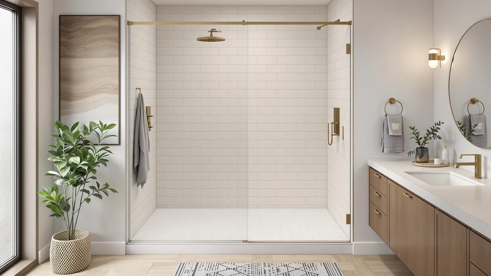

BILVOS 44 48" W Review (2026): Worth It?
Prices and picks verified as of October 2026. Independent, reader-supported reviews.


Quick Answer
This bilvos 44 48" w review found a $559.99 sliding shower door sized for a 44 to 48 inch wide, 70 inch tall opening, the exact footprint shared by the ComfyStyle alternative, but $10 cheaper. Unless you need a wider opening like the Eurotech Showers VITRA-200 or want a frameless design like the Findepot, it's the pick worth checking first.
Our pick: BILVOS 44-48" W x 70" at $559.99 Check Price on Amazon
Bottom line: our top pick is the BILVOS 44-48" W x 70" H Frameless Pivot Shower Door at $559.99.
Things to Know Before You Buy
- The BILVOS and the ComfyStyle share an identical 44 to 48 inch W by 70 inch H size. The BILVOS costs $10 less at $559.99 versus $569.99 for that same footprint.
- The listing doesn't publish a material or glass thickness spec for the BILVOS, so this bilvos 44 48" w review can't verify construction detail beyond size and price.
- The Eurotech Showers VITRA-200 is built for a noticeably wider 56.5 to 59 inch opening, roughly 9 to 15 inches more than the BILVOS's 44 to 48 inch range.
- The Findepot is the only alternative named as frameless in its own listing, a design detail the BILVOS and the ComfyStyle don't specify.
This bilvos 44 48" w review compares the $559.99 BILVOS 44-48" W x 70" sliding shower door against three alternatives on price, width, and frame style. The BILVOS and the ComfyStyle share an identical 44 to 48 inch wide, 70 inch tall footprint, but the BILVOS costs $10 less at $559.99 versus $569.99. That price gap is the clearest signal in this comparison, since neither listing publishes a material or glass thickness spec to separate them on construction alone.
We wrote this BILVOS 44-48 inch W review because shoppers comparing sliding doors sized for a 44 to 48 inch opening often pick whichever listing shows up first, without checking whether a nearly identical door costs less elsewhere. The BILVOS lists at $559.99, the lower of the two prices for that exact size range, and the ComfyStyle's extra $10 doesn't come with a published spec upgrade to justify it. That's why this review weighs the BILVOS against the ComfyStyle on size and price first, then against the Eurotech Showers VITRA-200 and the Findepot on width and frame style for shoppers whose opening doesn't match the 44 to 48 inch range at all.
Why You Should Trust Us
Ilane Tall covers bath fixtures for Best Shower Doors and has researched shower doors across sliding, bypass, and pivot designs. For this BILVOS 44-48 inch W review, she compared the BILVOS's price and size against three alternatives, weighing where an identical footprint actually saves you money and where a different width or frame style fits your bathroom better. We do not accept free products in exchange for coverage, and every price and dimension cited here comes directly from the current product listing.
Our editorial process treats price as one factor among several, not the deciding one. A lower price only earns credit in a review like this one when the door is sized for the same opening as its competitor, rather than a smaller or differently configured door that happens to cost less for unrelated reasons. That approach shapes every comparison in this piece, including how we weigh the BILVOS against the wider Eurotech Showers VITRA-200 and the frameless Findepot.
Our Research Experience
This bilvos 44 48" w review is based on research, not physical use. We compared the BILVOS 44-48" W x 70" against three alternative shower doors using the specifications, pricing, and product listings available for each one. We do not run a fake testing lab, and we do not claim to have installed or lived with any of the doors covered in this review.
We looked closely at how the BILVOS's 44 to 48 inch width and 70 inch height line up against the ComfyStyle's identical footprint, since that comparison isolates price as the only real variable between the two. Owners shopping this width range often assume a higher price buys a better door, and this review checks that assumption against the specs that are actually published rather than the price tag alone.
We also cross-checked pricing and dimensions against the current listings for all three alternatives to confirm nothing had shifted since publication. Where a data point wasn't available, such as a published rating, review count, or material for the BILVOS, the ComfyStyle, the Eurotech Showers VITRA-200, or the Findepot, we noted that gap rather than estimate a number the listing doesn't provide.
Overview & Specs

BILVOS 44-48" W x 70"
What we like
- $559.99 price, $10 less than the ComfyStyle despite both doors sharing the identical 44 to 48 inch by 70 inch footprint
- A straightforward 44 to 48 inch wide, 70 inch tall size that's easy to confirm against a standard alcove opening
- Fits a common 44 to 48 inch opening without requiring the wider 56.5 to 59 inch space the Eurotech Showers VITRA-200 needs
Flaws but not dealbreakers
- The listing doesn't specify a material or glass thickness, so you can't confirm construction detail the way the Findepot confirms its frameless design
- No rating or review count is published yet for this listing, so weigh the price against your own research before buying
- At a fixed 70 inch height, it won't fit a shorter or taller opening without confirming your exact ceiling clearance first
| Material | — |
| Size | 48"x70" |
The BILVOS 44-48" W x 70" leads this bilvos 44 48" w review on the strength of one clear number: price. At $559.99, it costs $10 less than the ComfyStyle despite both doors sharing the same 44 to 48 inch wide, 70 inch tall footprint, which makes it the simpler choice if your opening fits that range and you aren't chasing a specific glass or frame spec.
The listing doesn't detail the frame material or glass thickness the way the Findepot calls out its frameless design, so confirm those details directly with the seller before ordering if they matter for your install. At $559.99, the BILVOS is the cheaper of the two doors built for a 44 to 48 inch opening in this comparison, and that's the trade-off worth weighing against the wider Eurotech Showers VITRA-200 and the frameless Findepot covered below.
What We Liked
The clearest strength of the BILVOS 44-48" W x 70" is price relative to size. At $559.99, it's $10 cheaper than the ComfyStyle despite both doors being built for the identical 44 to 48 inch wide, 70 inch tall opening, and that's a direct dollar-for-dollar comparison this bilvos 44 48" w review could actually verify from the published listings.
We also liked that the dimensions are unambiguous. A 44 to 48 inch by 70 inch opening is a specific, easy-to-measure range, rather than a vaguer sizing description you sometimes have to guess at with other listings in this category.
What Could Be Better
The biggest gap this BILVOS 44-48 inch W review found in the listing is the lack of a published material or glass thickness spec. Unlike the Findepot, which names its frameless design directly in the listing, the BILVOS doesn't specify what the frame or glass is made of, so you're buying largely on size and price.
A published rating or review count isn't available for this listing either, which means you're weighing the specs on their own rather than against a pool of verified owner feedback. If your opening is wider than 48 inches, closer to the Eurotech Showers VITRA-200's 56.5 to 59 inch range, the BILVOS won't fit regardless of its lower price, and no amount of comparison shopping changes that measurement.
Who Is It For?
This bilvos 44 48" w review points to one clear answer: the door makes the most sense if your shower opening measures between 44 and 48 inches wide and close to 70 inches tall, and price matters more to you than a confirmed material or glass spec.
If your opening is wider, closer to the Eurotech Showers VITRA-200's 56.5 to 59 inch range, or you specifically want a frameless design like the Findepot, the alternatives below are built for those cases instead. Shoppers who have already measured a 44 to 48 inch opening and don't need a glass thickness spec will likely find the BILVOS the simpler, cheaper pick over the identically sized ComfyStyle.
Alternatives to Consider
The BILVOS 44-48" W x 70" isn't the only option worth considering in this bilvos 44 48" w review, and the three doors below cover a wider opening, a different price point, and a specifically frameless design. None of them match the BILVOS's exact 44 to 48 inch by 70 inch footprint except the ComfyStyle, which costs $10 more for the identical size.

Editor's Pick
ComfyStyle 44-48" W x 70"
At $569.99, the ComfyStyle shares the BILVOS's exact 44 to 48 inch wide, 70 inch tall footprint but costs $10 more, worth considering only if you prefer its listing details over the BILVOS's at the higher price.
$569.99
Check Price on Amazon
Best Value
Eurotech Showers VITRA-200 56.5-59" W
The Eurotech Showers VITRA-200 is built for a wider 56.5 to 59 inch opening, well beyond the BILVOS's 44 to 48 inch range, and at $549.99 it's worth considering only if your shower stall is actually that much bigger.
$549.99
Check Price on Amazon
Premium Choice
Findepot Frameless Sliding Shower Door
The Findepot is the only door in this comparison named as frameless in its own listing, and at $539.99 it's the least expensive option here, though its width isn't stated the way the BILVOS and ComfyStyle's 44 to 48 inch range is.
$539.99
Check Price on AmazonFrequently Asked Questions
What size opening does the BILVOS 44-48" W x 70" shower door need?
This bilvos 44 48" w review found that the door fits openings between 44 and 48 inches wide with a fixed 70 inch height, so measure your opening at multiple points and confirm the height matches before you order.
How does the BILVOS compare on price to the other doors in this review?
At $559.99, it's $10 cheaper than the identically sized ComfyStyle, $10 more than the wider Eurotech Showers VITRA-200, and $20 more than the Findepot, though it's also the cheaper of the two doors built for the same 44 to 48 inch opening.
Is the Eurotech Showers VITRA-200 a real alternative to the BILVOS?
Not for the same opening. The VITRA-200 fits a 56.5 to 59 inch wide space, well beyond the BILVOS's 44 to 48 inch range, so it only makes sense if your shower stall is actually that much wider.
Final Verdict
This bilvos 44 48" w review comes down to one confirmed advantage: price for an identical footprint. At $559.99, the BILVOS 44-48" W x 70" costs $10 less than the ComfyStyle despite both doors sharing the same 44 to 48 inch wide, 70 inch tall opening, and it costs less than the Eurotech Showers VITRA-200 for a smaller, more common size. If your opening measures 44 to 48 inches wide by roughly 70 inches tall and you don't need a confirmed glass or frame spec, BILVOS is the pick worth checking first. If your opening is wider, or you specifically want a frameless design, the Eurotech Showers VITRA-200 or the Findepot cover those cases at a different price point. Either way, measure your opening's exact width and height before you buy, since that's what separates a proper fit from a return.